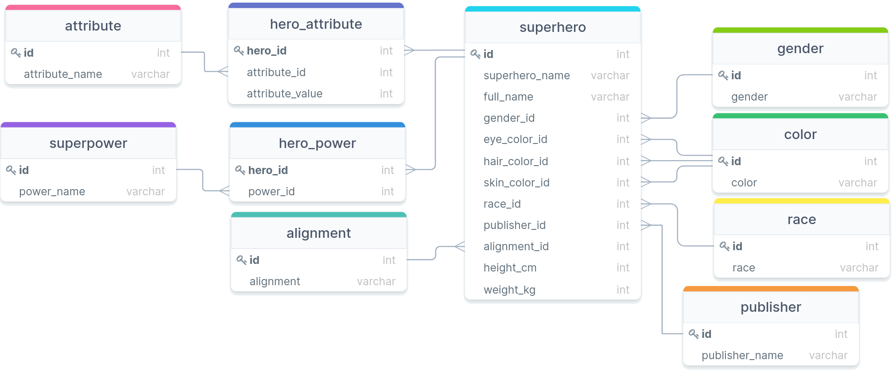

Joining Joins
Jed Rembold
Monday, September 23, 2024
Announcements
- I will have HW3 feedback to you by tomorrow afternoon
- No homework due this week, because you have a test on Wednesday!
- You’ll have the full class duration to take it, but it will be written for an hour
- Pen and paper exam: no computers
- Study
Materials
- Study guide with some practice questions
- Old test
- Solutions to both
- Polling: polling.jedrembold.prof
- Haley here to talk for a moment with you about career development!
Review Question!
Given the two tables and the query below, what would be the output?
events
| id | name | att |
|---|---|---|
| 0 | Dinner | 0 |
| 1 | Dinner | 1 |
| 2 | Concert | 2 |
| 3 | Bingo | 0 |
folks
| id | name | age |
|---|---|---|
| 0 | Bob | 13 |
| 1 | Jane | 16 |
| 2 | Bill | 23 |
| 3 | Hillary | 20 |
SELECT
COUNT(events.name)
FROM folks
LEFT JOIN events
ON events.att = folks.id
WHERE age % 2 = 0;- 0
- 1
- 2
- 3
Joins as Venn Diagrams
- Sometimes it may help to think of different types of joins as Venn diagrams

Compound Joins
Multiple Join Conditionals
- You are not limited to just a single condition in your
ONstatement! - You can chain multiple conditions together with
ANDorOR, just like withWHERE - Just recall when comparing two rows that ALL the conditions must be true for the data to be included in the joined table
SELECT *
FROM |||table 1|||
JOIN |||table 2|||
ON |||table 1|||.|||column 1||| = |||table 2|||.|||column 1|||
AND |||table 1|||.|||column 2||| > |||table 2|||.|||column 2|||;Word of Warning
- For inner joins, the output of joining on multiple
conditions would look the same as joining on one condition and then
filtering out the others using
WHERE - For other types of joins though, this isn’t
necessarily the case!
- A
LEFT JOINwould still give you everything in the left table, for instance, along withNULLvalues that aWHEREwould likely have filtered out
- A
- Main take-away:
- Join conditions and filtering conditions are doing different things, but they may seem interchangeable if you are just using inner joins.
Table Aliases
- Including long table names before each column name when referring to information from two different tables can get tedious
- You can define aliases for table names just like you can for column names!
- Syntax looks just like column aliases, using
AS - Can come immediately after you first reference a table name
- Usually after a
FROMorJOINstatement
- Usually after a
- In truth, the
ASis optional, but I find it helps some with readability
SELECT *
FROM |||tablename||| AS tn
JOIN |||tablename 2||| AS tn2
ON tn.|||column 1||| = tn2.|||column 2|||;Multiple Joins
- Nothing stops you from including multiple joins in your query
- Each additional join links back to the current growing joined table
- This means a second join is treating the entire initial join as the “left” table
- Be wary that if you join a new table that has multiple columns that could link to existing columns in previously joined tables, you likely want to ensure your join condition matches them all!
SELECT *
FROM |||tablename||| AS t1
JOIN |||tablename 2||| AS t2 ON t1.|||column_1||| = t2.|||column_1|||
JOIN |||tablename 3||| AS t3 ON t1.|||column_2||| = t3.|||column_1|||;A Super Example

How many blue-eyed superheros can fly?
Join Thyself
Self Joins
- You can actually join a table to itself!
- Why would you want to do this?
- Hierarchy data can frequently be explored in this fashion
- Comparisons between rows of a table
- You need to give unique aliases when doing this, or else you won’t have a way to distinguish between which columns you want
A Corporate Example
- We have a table containing the names and subordinate relationships between individuals in a corporation.
- What sorts of questions could we answer using just that table and some self joins?
Study Time
The Time is Yours
- The remainder of our time today is set aside for you to ask questions or work on the study materials